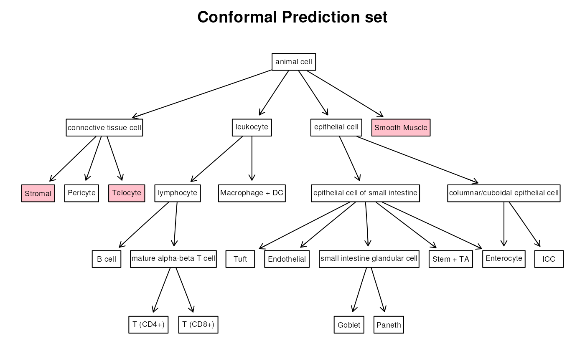

vignettes/scConform.Rmd
scConform.RmdCell type annotation is a crucial step in bioinformatic research. A multitude of annotated datasets are now readily accessible, providing valuable references for annotating cells in unannotated datasets originating from similar tissues. Typically, a model is chosen and trained on the reference data to predict the label of a new, unannotated cell in the query dataset.
These methods commonly provide point predictions of the cell label, along with estimated probabilities or scores assigned to each cell type in the reference dataset. However, relying solely on point predictions can be problematic when the corresponding estimated probability is low, leading to unreliable classification. To address this issue, we propose to exploit conformal inference to return prediction sets that include multiple labels, with the set size reflecting the confidence in the point prediction.
The package scConform implements two methods to achieve
this:
The first method uses split conformal inference (as a reference, see for example section 1 of Angelopoulus and Bates, 2022). The output is a prediction set, \(C(X_{new})\), that contains some of the cell types present in the reference data. Let \(Y_{new}\) be the true cell type of a new cell in the query dataset. Then, \(C(X_{new})\) satisfies \(P(Y_{new} \in C(X_{new})) \geq 1-\alpha\), where \(\alpha\) is a user-chosen error level.
The second method is based on conformal risk control (Angelopoulus et al., 2023). It considers the inherent relationships among cell types that are encoded as graph-structured constraints available through the cell ontology. The final output is a prediction set aligned with the cell ontology structure. Specifically, the prediction set will include all the children of an ancestor of the predicted class. The more unsure the point prediction, the broader the classification. Also this method satisfies \(P(Y_{new} \in C(X_{new})) \geq 1-\alpha\).
To install it
if (BiocManager::version() >= "3.20") {
BiocManager::install("scConform")
} else {
spdl::info(
"'scConform' requires Bioconductor version 3.20 or later, ",
"installing development version from Github"
)
devtools::install_github("ccb-hms/scConform")
}As an example, we’ll use the mouse ileum Merfish data from the
MerfishData Bioconductor package, segmented with Baysor.
For the purpose of this vignette, we’ll treat the data as if they were
single-cell data, discarding the spatial information. This is a toy
example in which reference and query data will be a subset of the same
dataset. In real life examples, data integration is a necessary first
step.
Next, load the cell ontology trough the ontoProc
Bioconductor package.
# Load data
spe_baysor <- MouseIleumPetukhov2021(
segmentation = "baysor",
use.images = FALSE, use.polygons = FALSE
)
# Load ontology
cl <- getOnto("cellOnto", "2023")
#> loading from cacheThe object cl contains information regarding all the
relationships among all the known cell types. The first step is to
filter the ontology and only keep the parts related to the cell types
that are present in the data.
This dataset does not provide annotations with the cell ontology tags, so we need to browse the ontology to find the interesting tags.
For more information on how to restrict the cell ontology, refer to the ontoProc documentation.
tags <- c(
"CL:0009022", # Stromal
"CL:0000236", # B cell
"CL:0009080", # Tuft
"CL:1000411", # Endothelial
"CL:1000335", # Enterocyte
"CL:1000326", # Goblet
"CL:0002088", # ICC
"CL:0009007", # Macrophage + DC
"CL:1000343", # Paneth
"CL:0000669", # Pericyte
"CL:1000278", # Smooth Muscle
"CL:0009017", # Stem + TA
"CL:0000492", # T (CD4+)
"CL:0000625", # T (CD8+)
"CL:0017004" # Telocyte
)
opi <- graph_from_graphnel(onto_plot2(cl, tags))In the opi object, there are also instances from other
ontologies (CARO and BFO) that need to be removed.
Moreover, the names of the leaf nodes of the ontology must correspond to the names used for the annotation.
## Delete CARO and BFO instances
sel_ver <- V(opi)$name[c(grep("CARO", V(opi)$name), grep("BFO", V(opi)$name))]
opi1 <- opi - sel_ver
## Rename vertex to match annotations
V(opi1)$name[grep("CL:0000236", V(opi1)$name)] <- "B cell"
V(opi1)$name[grep("CL:1000411", V(opi1)$name)] <- "Endothelial"
V(opi1)$name[grep("CL:1000335", V(opi1)$name)] <- "Enterocyte"
V(opi1)$name[grep("CL:1000326", V(opi1)$name)] <- "Goblet"
V(opi1)$name[grep("CL:0002088", V(opi1)$name)] <- "ICC"
V(opi1)$name[grep("CL:0009007", V(opi1)$name)] <- "Macrophage + DC"
V(opi1)$name[grep("CL:1000343", V(opi1)$name)] <- "Paneth"
V(opi1)$name[grep("CL:0000669", V(opi1)$name)] <- "Pericyte"
V(opi1)$name[grep("CL:1000278", V(opi1)$name)] <- "Smooth Muscle"
V(opi1)$name[grep("CL:0009017", V(opi1)$name)] <- "Stem + TA"
V(opi1)$name[grep("CL:0009022", V(opi1)$name)] <- "Stromal"
V(opi1)$name[grep("CL:0000492", V(opi1)$name)] <- "T (CD4+)"
V(opi1)$name[grep("CL:0000625", V(opi1)$name)] <- "T (CD8+)"
V(opi1)$name[grep("CL:0017004", V(opi1)$name)] <- "Telocyte"
V(opi1)$name[grep("CL:0009080", V(opi1)$name)] <- "Tuft"
## Add the edge from connective tissue cell and telocyte and delete redundant
## nodes
opi1 <- add_edges(opi1, c("connective\ntissue cell\nCL:0002320", "Telocyte"))
gr <- as_graphnel(opi1)
opi2 <- opi1 - c(
"somatic\ncell\nCL:0002371", "contractile\ncell\nCL:0000183",
"native\ncell\nCL:0000003"
)
V(opi2)$name <- trimws(gsub("CL:.*|\\n", " ", V(opi2)$name))
gr1 <- as_graphnel(opi2)
## Plot the final ontology
attrs <- list(node = list(shape = "box", fontsize = 15, fixedsize = FALSE))
plot(gr1, attrs = attrs)Modify the colData variable leiden_final to unify B
cells and enterocytes
spe_baysor$cell_type <- spe_baysor$leiden_final
spe_baysor$cell_type[spe_baysor$cell_type %in% c(
"B (Follicular, Circulating)",
"B (Plasma)"
)] <- "B cell"
spe_baysor$cell_type[grep("Enterocyte", spe_baysor$cell_type)] <- "Enterocyte"
spe_baysor <- spe_baysor[, spe_baysor$cell_type %notin% c(
"Removed",
"Myenteric Plexus"
)]
spe_baysor
#> class: SpatialExperiment
#> dim: 241 5163
#> metadata(0):
#> assays(2): counts molecules
#> rownames(241): Acsl1 Acta2 ... Vcan Vim
#> rowData names(0):
#> colnames: NULL
#> colData names(8): n_transcripts density ... sample_id cell_type
#> reducedDimNames(0):
#> mainExpName: NULL
#> altExpNames(0):
#> spatialCoords names(2) : x y
#> imgData names(1): sample_id
# See frequencies of cell types
table(spe_baysor$cell_type)
#>
#> B cell Endothelial Enterocyte Goblet ICC
#> 536 231 1257 299 31
#> Macrophage + DC Paneth Pericyte Smooth Muscle Stem + TA
#> 427 328 102 428 580
#> Stromal T (CD4+) T (CD8+) Telocyte Tuft
#> 489 197 125 115 18Now randomly split the data into reference and query data.
set.seed(1636)
ref <- sample(seq_len(ncol(spe_baysor)), 600)
spe_ref <- spe_baysor[, ref]
spe_query <- spe_baysor[, -ref]
# Reference data
spe_ref
#> class: SpatialExperiment
#> dim: 241 600
#> metadata(0):
#> assays(2): counts molecules
#> rownames(241): Acsl1 Acta2 ... Vcan Vim
#> rowData names(0):
#> colnames: NULL
#> colData names(8): n_transcripts density ... sample_id cell_type
#> reducedDimNames(0):
#> mainExpName: NULL
#> altExpNames(0):
#> spatialCoords names(2) : x y
#> imgData names(1): sample_id
# Query data
spe_query
#> class: SpatialExperiment
#> dim: 241 4563
#> metadata(0):
#> assays(2): counts molecules
#> rownames(241): Acsl1 Acta2 ... Vcan Vim
#> rowData names(0):
#> colnames: NULL
#> colData names(8): n_transcripts density ... sample_id cell_type
#> reducedDimNames(0):
#> mainExpName: NULL
#> altExpNames(0):
#> spatialCoords names(2) : x y
#> imgData names(1): sample_idWe now need to build a classification model. To this aim, we’ll draw a random sample of 300 cells from the reference data, and train a multinomial model on those. As explanatory variables we’ll use the 50 most variable genes. For this step, every statistical model or machine learning method can be used, as long as it provides also estimated probabilities for each class.
# Randomly select 300 cells
set.seed(1704)
train <- sample(seq_len(ncol(spe_ref)), 300)
# Training data
spe_train <- spe_ref[, train]
spe_train
#> class: SpatialExperiment
#> dim: 241 300
#> metadata(0):
#> assays(2): counts molecules
#> rownames(241): Acsl1 Acta2 ... Vcan Vim
#> rowData names(0):
#> colnames: NULL
#> colData names(8): n_transcripts density ... sample_id cell_type
#> reducedDimNames(0):
#> mainExpName: NULL
#> altExpNames(0):
#> spatialCoords names(2) : x y
#> imgData names(1): sample_id
# get HVGs
spe_train <- logNormCounts(spe_train)
v <- modelGeneVar(spe_train)
hvg <- getTopHVGs(v, n = 50)
# Extract counts and convert data into a data.frame format
df_train <- as.data.frame(t(as.matrix(counts(spe_train[hvg, ]))))
df_train$Y <- spe_train$cell_type
table(df_train$Y)
#>
#> B cell Endothelial Enterocyte Goblet ICC
#> 25 10 68 19 2
#> Macrophage + DC Paneth Pericyte Smooth Muscle Stem + TA
#> 28 17 4 22 48
#> Stromal T (CD4+) T (CD8+) Telocyte Tuft
#> 34 13 5 4 1
# Fit multinomial model
fit <- vglm(Y ~ .,
family = multinomial(refLevel = "B cell"),
data = df_train
)As anticipated in the introduction, the first method uses split conformal inference to build the prediction sets. It requires to split the reference data into two subsets:
Given \(\hat{f}\) and the calibration data, the objective of conformal inference is to build, for a new non-annotated cell \(X_{new}\), a prediction set \(C(X_{new})\) that satisfies
\[\begin{equation} P(Y_{new} \in C(X_{new})) \geq 1-\alpha, (\#eq:cov) \end{equation}\]
where \(Y_{new}\) is the true label of the new cell and \(\alpha\) is a user-chosen error level. The algorithm for split conformal inference is the following:
For the data in the calibration set, \((X_1, Y_1), \dots, (X_n, Y_n),\) obtain the conformal scores \(s_1=1-\hat{f}(X_i)_{Y_i}\) (i.e. 1 minus the estimated probability that the model is assigning to the true label of the \(i\)-th cell). These scores will be high when the model is assigning a small probability to the true class, and low otherwise.
Obtain \(\hat{q}\) as the \(\lceil(1-\alpha)(n+1)\rceil/n\) empirical quantile of the conformal scores.
Finally, for a new cell \(X_{new}\), build a prediction set by including all the classes or which the estimated probability is higher than \(1-\hat{q}\): \[ C(X_{new}) = \left\{y: \hat{f}(X_{n+1})_y\geq 1-\hat{q}\right\} \]
The first step to build conformal prediction sets is to obtain matrices with the estimated probabilities for each cell type for cells in the calibration data and in the query data. Each row of the matrix corresponds to a particular cell, while each row to a different cell type. The entry \(p_{i,j}\) of the matrix indicates the estimated probability that the cell \(i\) is of type \(j\).
spe_cal <- spe_ref[, -train]
# Prediction matrix for calibration data
df_cal <- as.data.frame(t(as.matrix(counts(spe_cal[hvg, ]))))
p_cal <- predict(fit, newdata = df_cal, type = "response")
head(round(p_cal, 3))
#> B cell Endothelial Enterocyte Goblet ICC Macrophage + DC Paneth Pericyte
#> 1 0.001 0.000 0.023 0.000 0.000 0.561 0.000 0.000
#> 2 0.000 0.000 0.000 0.000 0.000 0.000 0.000 0.000
#> 3 0.018 0.000 0.041 0.000 0.001 0.923 0.000 0.001
#> 4 0.001 0.001 0.283 0.035 0.001 0.003 0.017 0.000
#> 5 0.000 0.000 1.000 0.000 0.000 0.000 0.000 0.000
#> 6 0.000 0.000 0.002 0.000 0.000 0.000 0.141 0.000
#> Smooth Muscle Stem + TA Stromal T (CD4+) T (CD8+) Telocyte Tuft
#> 1 0.002 0.000 0.407 0.000 0.000 0.006 0.000
#> 2 0.000 0.000 0.000 0.001 0.999 0.000 0.000
#> 3 0.005 0.007 0.001 0.001 0.000 0.000 0.001
#> 4 0.004 0.161 0.488 0.001 0.002 0.003 0.001
#> 5 0.000 0.000 0.000 0.000 0.000 0.000 0.000
#> 6 0.000 0.856 0.000 0.000 0.000 0.000 0.000
# Prediction matrix for query data
df_test <- as.data.frame(t(as.matrix(counts(spe_query[hvg, ]))))
p_test <- predict(fit, newdata = df_test, type = "response")
head(round(p_test, 3))
#> B cell Endothelial Enterocyte Goblet ICC Macrophage + DC Paneth Pericyte
#> 1 0 0.627 0 0 0 0 0 0
#> 2 0 0.000 0 0 0 0 0 0
#> 3 0 0.001 0 0 0 0 0 0
#> 4 0 0.000 0 0 0 0 0 0
#> 5 0 0.000 0 0 0 0 0 0
#> 6 0 0.000 0 0 0 0 0 0
#> Smooth Muscle Stem + TA Stromal T (CD4+) T (CD8+) Telocyte Tuft
#> 1 0.000 0 0.001 0.000 0 0.372 0
#> 2 0.997 0 0.000 0.000 0 0.003 0
#> 3 0.021 0 0.002 0.001 0 0.975 0
#> 4 1.000 0 0.000 0.000 0 0.000 0
#> 5 0.930 0 0.069 0.000 0 0.001 0
#> 6 1.000 0 0.000 0.000 0 0.000 0We can now directly call the getPredictionSet function
by using as input the prediction matrices for the calibration and the
query dataset. In this case, the output of the function will be a list
whose elements are the prediction sets for each query cell.
By setting follow_ontology=FALSE, we are asking the
function to return prediction sets obtained via split conformal
inference. The parameter onto is not necessary with this
method, but if the ontology is provided then it will be used by the
function to retrieve the considered cell types. Alternatively, we can
explicitly provide the labels with the parameter labels.
The parameter alpha indicates the allowed miscoverage
percentage (see @ref(eq:cov)). For example, if we set
alpha=0.1, it means that at most 10% of the prediction sets
we obtain will not include the true label.
labels <- colnames(p_test)
sets <- getPredictionSets(
x_query = p_test,
x_cal = p_cal,
y_cal = spe_cal$cell_type,
alpha = 0.1,
follow_ontology = FALSE,
labels = labels
)
# See the first six prediction sets
sets[1:6]
#> [[1]]
#> [1] "Endothelial" "Telocyte"
#>
#> [[2]]
#> [1] "Smooth Muscle"
#>
#> [[3]]
#> [1] "Smooth Muscle" "Telocyte"
#>
#> [[4]]
#> [1] "Smooth Muscle"
#>
#> [[5]]
#> [1] "Smooth Muscle" "Stromal"
#>
#> [[6]]
#> [1] "Smooth Muscle"Since in this example the cell labels are available, we can
explicitly check that @ref(eq:cov) is satisfied by computing the
proportion of sets that include the true label. We set
alpha=0.1, so we expect this proportion to be higher than
0.9.
# Check coverage
cvg <- rep(NA, length(sets))
for (i in seq_len(length(sets))) {
cvg[i] <- spe_query$cell_type[i] %in% sets[[i]]
}
mean(cvg)
#> [1] 0.9035722As an alternative, we can provide as input a
SingleCellExperiment object. In this case, it needs to have
the estimated probabilities for each cell type in the
colData. The names of these colData have to
correspond to the names of the leaf nodes in the ontology.
The output will be a SingleCellExperiment object with a
new variable in the colData containing the prediction sets.
The name of this variable can be assigned trough the
pr_name parameter.
# Retrieve labels as leaf nodes of the ontology
labels <- V(opi2)$name[degree(opi2, mode = "out") == 0]
# Create corresponding colData
for (i in labels) {
colData(spe_cal)[[i]] <- p_cal[, i]
colData(spe_query)[[i]] <- p_test[, i]
}
# Create prediction sets
spe_query <- getPredictionSets(
x_query = spe_query,
x_cal = spe_cal,
y_cal = spe_cal$cell_type,
alpha = 0.1,
follow_ontology = FALSE,
pr_name = "pred_set",
labels = labels
)
# See the new variable pred_set into the colData
head(colData(spe_query))
#> DataFrame with 6 rows and 24 columns
#> n_transcripts density elongation area avg_confidence leiden_final
#> <numeric> <numeric> <numeric> <numeric> <numeric> <character>
#> 1 39 0.02159 5.082 1806 0.8647 Endothelial
#> 2 165 0.02016 1.565 8186 0.9528 Smooth Muscle
#> 3 139 0.02279 1.820 6100 0.9762 Smooth Muscle
#> 4 80 0.01828 1.546 4376 0.9076 Smooth Muscle
#> 5 75 0.02479 3.475 3025 0.8952 Smooth Muscle
#> 6 167 0.02409 1.265 6932 0.9618 Smooth Muscle
#> sample_id cell_type Stromal B cell Tuft Endothelial
#> <character> <character> <numeric> <numeric> <numeric> <numeric>
#> 1 ileum Endothelial 1.06770e-03 4.62746e-06 1.09285e-06 6.26716e-01
#> 2 ileum Smooth Muscle 2.48790e-07 2.11623e-12 1.71646e-09 4.27276e-13
#> 3 ileum Smooth Muscle 1.82261e-03 1.05365e-06 3.42260e-05 1.45712e-03
#> 4 ileum Smooth Muscle 4.46595e-07 8.68709e-12 1.84782e-10 1.48018e-11
#> 5 ileum Smooth Muscle 6.87351e-02 5.40229e-05 3.80670e-05 1.56797e-04
#> 6 ileum Smooth Muscle 6.47366e-15 2.80039e-21 2.51182e-16 3.76540e-21
#> Enterocyte Goblet ICC Macrophage + DC Paneth Pericyte
#> <numeric> <numeric> <numeric> <numeric> <numeric> <numeric>
#> 1 6.23838e-09 2.16089e-06 1.04065e-04 8.69702e-11 2.46469e-08 1.25208e-06
#> 2 3.65028e-15 5.45567e-19 3.26311e-10 3.71068e-15 1.04596e-11 7.83728e-11
#> 3 7.62737e-11 1.02715e-10 1.30690e-04 4.16898e-09 1.48191e-07 2.69325e-06
#> 4 3.06169e-10 4.21061e-16 8.73496e-10 1.02177e-11 3.33635e-09 1.75309e-11
#> 5 9.53445e-06 1.14109e-06 1.68140e-05 3.24168e-06 3.04576e-04 4.81784e-06
#> 6 1.27740e-21 9.27025e-38 7.72260e-16 3.18369e-21 1.04362e-26 5.48492e-22
#> Smooth Muscle Stem + TA T (CD4+) T (CD8+) Telocyte
#> <numeric> <numeric> <numeric> <numeric> <numeric>
#> 1 3.17594e-12 1.94285e-04 2.61437e-07 1.10020e-05 3.71897e-01
#> 2 9.97273e-01 4.23329e-18 3.08082e-10 4.01534e-10 2.72648e-03
#> 3 2.11629e-02 5.03876e-11 5.90176e-04 2.05918e-05 9.74778e-01
#> 4 9.99986e-01 5.59105e-10 4.55175e-09 9.09174e-10 1.35576e-05
#> 5 9.29946e-01 5.76652e-07 5.48474e-05 1.91186e-05 6.55575e-04
#> 6 9.99984e-01 1.63394e-24 1.70917e-14 4.89589e-15 1.60623e-05
#> pred_set
#> <list>
#> 1 Endothelial,Telocyte
#> 2 Smooth Muscle
#> 3 Smooth Muscle,Telocyte
#> 4 Smooth Muscle
#> 5 Stromal,Smooth Muscle
#> 6 Smooth MuscleLet \(\hat{y}(x)\) be the class with the maximum estimated probability. Moreover, given a directed graph let \(P(v)\) and \(A(v)\) be the set of children nodes and ancestor nodes of \(v\), respectively. Finally, for each node \(v\) define a score \(g(v,x)\) as the sum of the predicted probabilities of the leaf nodes that are children of \(v\). We build the sets as follows:
\[ P(v) \cup \{P(a): a\in A(\hat{y}(x)): g(a,x)\leq\lambda \}, \] where \(v:v\in A(\hat{y}(x)), \;g(v,x)\geq\lambda\) and \(v=\arg\min_{u:g(u,x)\geq\lambda}g(u,x)\).
In words, we start from the predicted class and we go up in the graph until we find an ancestor of \(\hat{y}(x)\) that has a score that is at least \(\lambda\) and include in the prediction sets all its children. Then we add to this subgraph the other ones that contain \(\hat{y}(x)\) for which the score is less than \(\lambda\). To choose \(\lambda\), we follow eq. (4) in Angelopoulus et al., 2023 (2022), considering the miscoverage as loss function.
To switch to the hierarchical algorithm, we just need to set
follow_ontology=TRUE and provide an ontology to the
onto parameter. As in the previous case, if the input is a
SingleCellExperiment object then the output will be again a
SingleCellExperiment object with a new variable containing
the prediction sets in the colData.
spe_query <- getPredictionSets(
x_query = spe_query,
x_cal = spe_cal,
y_cal = spe_cal$cell_type,
onto = opi2,
alpha = 0.1,
follow_ontology = TRUE,
pr_name = "pred_set_hier",
BPPARAM = MulticoreParam(workers = 2),
simplify_pred = FALSE
)
# See the first six prediction sets
head(spe_query$pred_set_hier)
#> [[1]]
#> [1] "Tuft" "Endothelial" "Enterocyte" "Goblet"
#> [5] "ICC" "Paneth" "Stem + TA" "Stromal"
#> [9] "B cell" "Macrophage + DC" "Pericyte" "Smooth Muscle"
#> [13] "T (CD4+)" "T (CD8+)" "Telocyte"
#>
#> [[2]]
#> [1] "Smooth Muscle"
#>
#> [[3]]
#> [1] "Telocyte"
#>
#> [[4]]
#> [1] "Smooth Muscle"
#>
#> [[5]]
#> [1] "Smooth Muscle"
#>
#> [[6]]
#> [1] "Smooth Muscle"Also in this case, we can check the coverage:
# Check coverage
cvg1 <- rep(NA, length(spe_query$pred_set_hier))
for (i in seq_len(length(spe_query$pred_set_hier))) {
cvg1[i] <- spe_query$cell_type[i] %in% spe_query$pred_set_hier[[i]]
}
mean(cvg1)
#> [1] 0.8912996As an alternative, we can choose to return only the common ancestor,
instead of the entire set of predicted labels. This can be done directly
in the function by setting simplify_pred=TRUE.
Alternatively, we can convert the obtained prediction sets invoking the
function returnCommonAncestor.
spe_query$pred_set_hier_simp <- vapply(
spe_query$pred_set_hier,
function(x) returnCommonAncestor(x, opi2),
character(1)
)
head(spe_query$pred_set_hier_simp)
#> [1] "animal cell" "Smooth Muscle" "Telocyte" "Smooth Muscle"
#> [5] "Smooth Muscle" "Smooth Muscle"Let’s now visualize the obtained prediction sets. The simplest way is to just ask to color the labels included in the prediction set. Let’s compare the prediction sets for one cell obtained with the two methods
plotResult(spe_query$pred_set[[75]], opi2,
col_grad = "pink", attrs = attrs, add_scores = FALSE,
title = "Conformal Prediction set"
)
plotResult(spe_query$pred_set_hier[[75]], opi2,
col_grad = "pink", attrs = attrs, add_scores = FALSE,
title = "Hierarchical prediction set"
)We can now instead give as input also the estimated probabilities and
a gradient. The function will color the cells according to the gradient,
with stronger colors corresponding to higher probabilities. If
add_scores=TRUE, then the estimated probabilities will be
added to the labels.
plotResult(spe_query$pred_set[[75]], opi2,
probs = p_test[75, ],
col_grad = c("lemonchiffon", "orange", "darkred"),
attrs = attrs, add_scores = TRUE,
title = "Conformal Prediction set"
)
plotResult(spe_query$pred_set_hier[[75]], opi2,
probs = p_test[75, ],
col_grad = c("lemonchiffon", "orange", "darkred"),
attrs = attrs, add_scores = TRUE,
title = "Hierarchical Prediction set"
)R version 4.4.1 (2024-06-14)
Platform: x86_64-pc-linux-gnu
Running under: Ubuntu 22.04.4 LTS
Matrix products: default
BLAS: /usr/lib/x86_64-linux-gnu/openblas-pthread/libblas.so.3
LAPACK: /usr/lib/x86_64-linux-gnu/openblas-pthread/libopenblasp-r0.3.20.so; LAPACK version 3.10.0
locale:
[1] LC_CTYPE=en_US.UTF-8 LC_NUMERIC=C
[3] LC_TIME=en_US.UTF-8 LC_COLLATE=en_US.UTF-8
[5] LC_MONETARY=en_US.UTF-8 LC_MESSAGES=en_US.UTF-8
[7] LC_PAPER=en_US.UTF-8 LC_NAME=C
[9] LC_ADDRESS=C LC_TELEPHONE=C
[11] LC_MEASUREMENT=en_US.UTF-8 LC_IDENTIFICATION=C
time zone: UTC
tzcode source: system (glibc)
attached base packages:
[1] splines stats4 stats graphics grDevices utils datasets
[8] methods base
other attached packages:
[1] BiocParallel_1.38.0 scran_1.32.0
[3] scuttle_1.14.0 igraph_2.0.3
[5] MerfishData_1.6.0 SpatialExperiment_1.14.0
[7] EBImage_4.46.0 ontoProc_1.26.0
[9] ontologyIndex_2.12 VGAM_1.1-11
[11] SingleCellExperiment_1.26.0 SummarizedExperiment_1.34.0
[13] Biobase_2.64.0 GenomicRanges_1.56.1
[15] GenomeInfoDb_1.40.1 IRanges_2.38.0
[17] S4Vectors_0.42.0 BiocGenerics_0.50.0
[19] MatrixGenerics_1.16.0 matrixStats_1.3.0
[21] scConform_0.99.1 BiocStyle_2.32.1
loaded via a namespace (and not attached):
[1] jsonlite_1.8.8 magrittr_2.0.3
[3] magick_2.8.3 rmarkdown_2.27
[5] fs_1.6.4 zlibbioc_1.50.0
[7] ragg_1.3.2 vctrs_0.6.5
[9] memoise_2.0.1 DelayedMatrixStats_1.26.0
[11] RCurl_1.98-1.14 htmltools_0.5.8.1
[13] S4Arrays_1.4.1 AnnotationHub_3.12.0
[15] curl_5.2.1 BiocNeighbors_1.22.0
[17] SparseArray_1.4.8 sass_0.4.9
[19] bslib_0.7.0 htmlwidgets_1.6.4
[21] desc_1.4.3 cachem_1.1.0
[23] mime_0.12 lifecycle_1.0.4
[25] pkgconfig_2.0.3 rsvd_1.0.5
[27] Matrix_1.7-0 R6_2.5.1
[29] fastmap_1.2.0 GenomeInfoDbData_1.2.12
[31] shiny_1.8.1.1 digest_0.6.36
[33] AnnotationDbi_1.66.0 dqrng_0.4.1
[35] irlba_2.3.5.1 ExperimentHub_2.12.0
[37] textshaping_0.4.0 RSQLite_2.3.7
[39] beachmat_2.20.0 filelock_1.0.3
[41] fansi_1.0.6 httr_1.4.7
[43] abind_1.4-5 compiler_4.4.1
[45] withr_3.0.0 bit64_4.0.5
[47] tiff_0.1-12 DBI_1.2.3
[49] highr_0.11 rappdirs_0.3.3
[51] DelayedArray_0.30.1 rjson_0.2.21
[53] bluster_1.14.0 tools_4.4.1
[55] httpuv_1.6.15 glue_1.7.0
[57] promises_1.3.0 grid_4.4.1
[59] cluster_2.1.6 generics_0.1.3
[61] metapod_1.12.0 BiocSingular_1.20.0
[63] ScaledMatrix_1.12.0 utf8_1.2.4
[65] XVector_0.44.0 BiocVersion_3.19.1
[67] pillar_1.9.0 limma_3.60.3
[69] BumpyMatrix_1.12.0 later_1.3.2
[71] dplyr_1.1.4 BiocFileCache_2.12.0
[73] lattice_0.22-6 bit_4.0.5
[75] tidyselect_1.2.1 locfit_1.5-9.10
[77] Biostrings_2.72.1 knitr_1.47
[79] bookdown_0.39 edgeR_4.2.0
[81] ontologyPlot_1.7 xfun_0.45
[83] statmod_1.5.0 DT_0.33
[85] UCSC.utils_1.0.0 fftwtools_0.9-11
[87] paintmap_1.0 yaml_2.3.8
[89] evaluate_0.24.0 codetools_0.2-20
[91] tibble_3.2.1 Rgraphviz_2.48.0
[93] BiocManager_1.30.23 graph_1.82.0
[95] cli_3.6.3 xtable_1.8-4
[97] reticulate_1.38.0 systemfonts_1.1.0
[99] jquerylib_0.1.4 Rcpp_1.0.12
[101] dbplyr_2.5.0 png_0.1-8
[103] parallel_4.4.1 pkgdown_2.0.9
[105] blob_1.2.4 jpeg_0.1-10
[107] sparseMatrixStats_1.16.0 bitops_1.0-7
[109] purrr_1.0.2 crayon_1.5.3
[111] rlang_1.1.4 KEGGREST_1.44.1